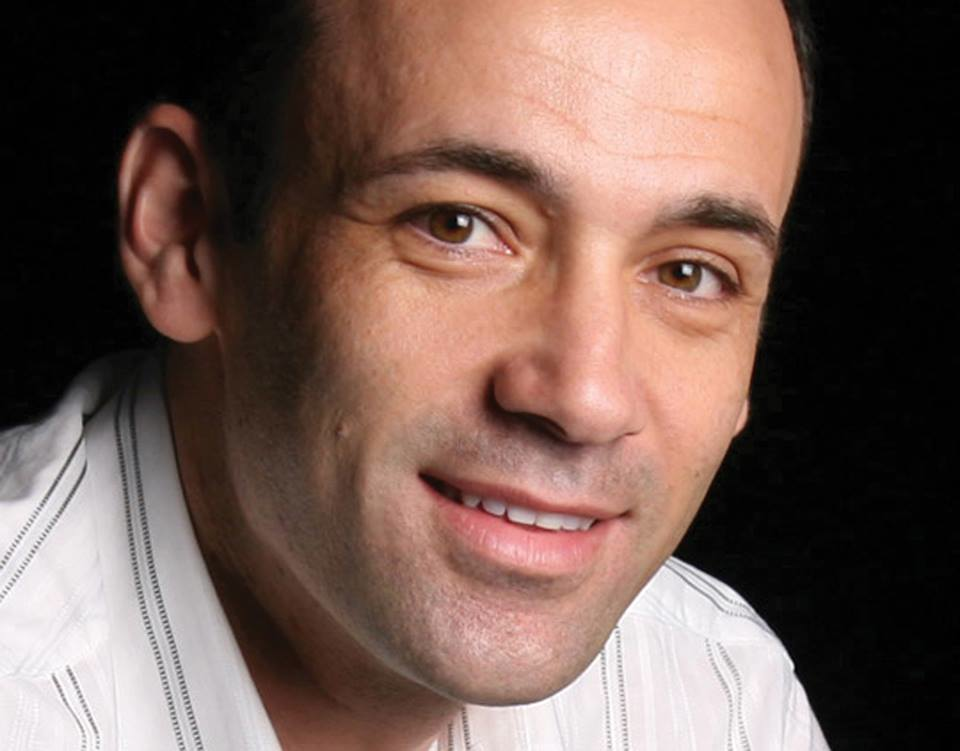
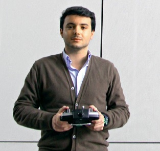
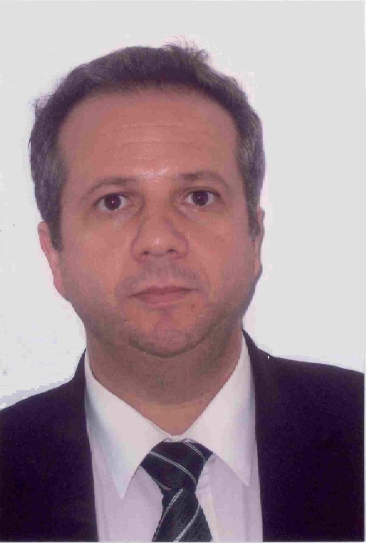
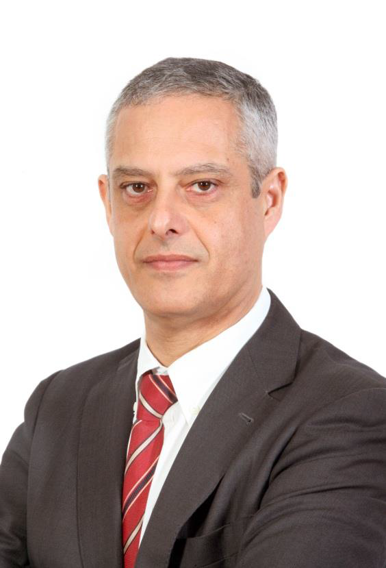
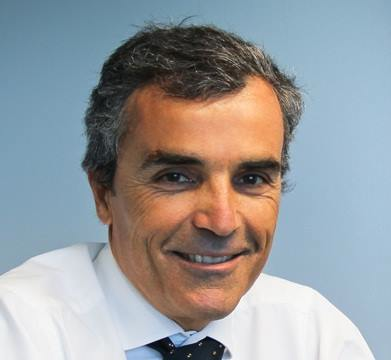
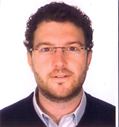

- 
António Miguel Ferreira
CEO e co-fundador da Lunacloud, distribuidora mundial de serviços cloud que recentemente superou a Amazon e a Rackspace em testes de desempenho de servidores. Esta empresa chegou mesmo a obter resultados oito vezes superiores aos concorrentes no desempenho dos discos de armazenamento e e o dobro da velocidade na rede interna de servidores. Para além de CEO da Lunacloud, António Miguel Ferreira é um pioneiro da Internet e tem um historial incrível no que diz respeito à criação e gestão de diversas companhias ligadas à Internet e à indústria do alojamento web, assim como outras áreas de negócio.
Cláudia Queirós
Cláudia Queirós trabalha há diversos anos na Ericsson e é actualmente gestora de Mobile Broadband Solutions para a região mediterrânica, com especial enfoque nas soluções de Rádio GSM, WCDMA e LTE da Ericsson.
- 
David Mota
David Mota, de apenas 24 anos, é managing partner da SkyEye e vem à SET falar sobre o trabalho desenvolvido nesta empresa, especializada no uso de drones voadores ao serviço da captação de imagens aéreas. A SkyEye já recolheu imagens para empresas mediáticas, como a EDP, a McDonald’s e a Opel. Fez também a cobertura aérea do festival Optimus Alive.
- 
Francisco Nunes
Francisco Nunes tem largos anos de experiência no sector das tecnologias de informação. É colaborador da IBM e actualmente desempenha funções ao nível do business planning e desenvolvimento de estratégias de vendas na Compta SA, empresa portuguesa com mais de 40 anos de actividade especializada em soluções nas áreas de telecomunicações e sistemas de informação.
Tem formação base em Matemática e em Engenharia Informática, mestrado em Engenharia Informática e frequenta o doutoramento em Sistemas de Informação. É também investigador na ADETTI, centro de investigação do ISCTE/IUL, professor e membro do Conselho Científico do Centro de Investigação em Tecnologias de Informação da Universidade Autónoma de Lisboa - CESITI. - 
Luís Gameiro da Silva
Luís Gameiro da Silva, licenciado em Eng. Electrotécnica, um profissional com vastos anos de experiência nas áreas da banca, seguros e utilities, actualmente administrador da Glintt. A operar na Europa, África e América Latina, com presença forte nos sectores da Banca, Telecomunicações, Saúde, Comércio, Indústria e Administração Pública, a Glintt é uma das maiores empresas tecnológicas Portuguesas, cotada na NYSE Euronext Lisbon.
- 
Paulo Guedes
Paulo Guedes foi professor associado do Instituto Superior Técnico no Departamento de Engenharia Informática. Tem um Doutoramento pelo IST em Engenharia Electrotécnica e de Computadores. Actualmente é Executive Manager da Espírito Santo Informática, onde é responsável pelas áreas de Processos e Qualidade, Risco de IT, Arquitectura e Padrões e Recursos Humanos.
- 
Ricardo Mendes
Fundador e Administrador do Grupo TEKEVER, que reúne sete empresas nacionais e diversas empresas internacionais dedicadas ao fornecimento de soluções tecnológicas para os mercados empresarial, aeronáutico, de defesa e segurança e Espaço. Mestre em Engenharia Informática e de Computadores, o Eng. Ricardo Mendes foi Docente e Investigador do Departamento de Engenharia Informática do Instituto Superior Técnico até 2006.
No Grupo TEKEVER, o Eng. Ricardo Mendes é responsável pela definição e implementação da estratégia de expansão tecnológica e internacional, sendo que hoje o Grupo conta já com uma presença activa na China, no Brasil, nos Estados Unidos e, mais recentemente, no Reino Unido. Em paralelo, o Grupo TEKEVER coordena o desenvolvimento de vários projectos Europeus de inovação, no âmbito dos temas de Aeronáutica, Segurança e Sistemas Espaciais, reunindo as mais prestigiadas entidades internacionais académicas e industriais da área.